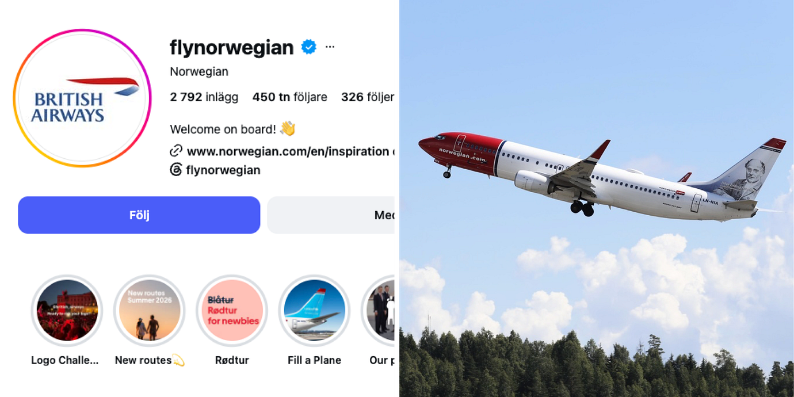
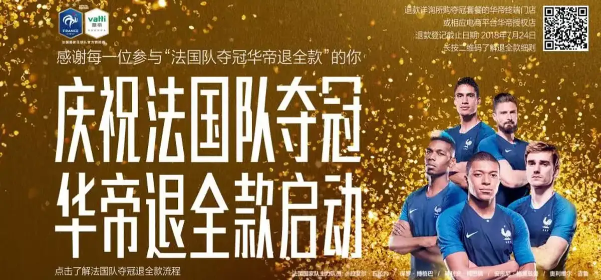
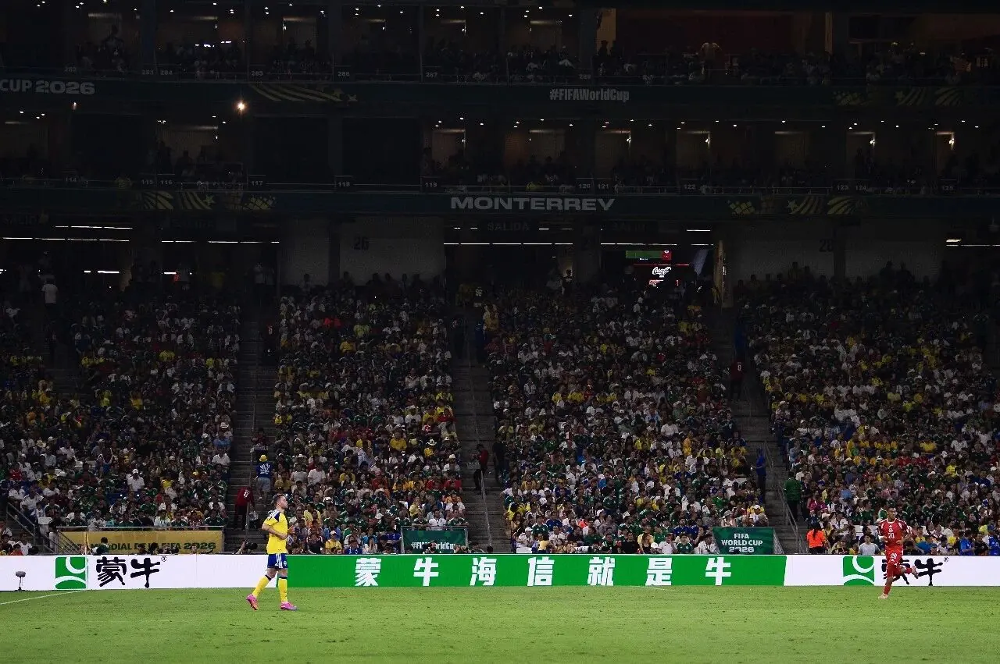
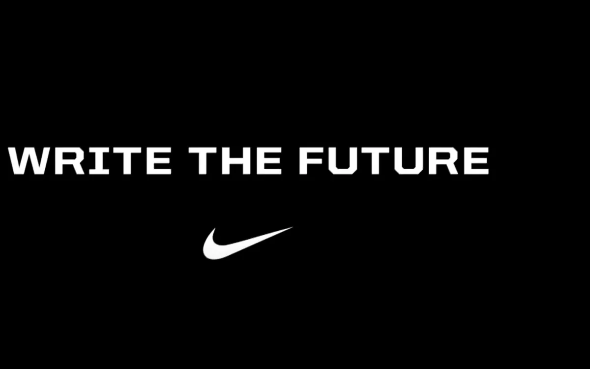

世界杯营销
已归档2026 世界杯是体育营销案例观察的首个完整归档专题。一级入口包含四类核心内容：关键数据解读、微博热搜档案、201 个 2026 当届案例和 32 个历届经典案例；中国品牌、品牌索引与方法论作为专题资料继续保留在本页内部。
当届代表案例

蒙牛：《冠军的秘密》
资源溢出与“放下冠军”的赛后收束

蒙牛 × 海信：“山蒙海誓”围挡共创
把单品牌围挡改写为中国品牌共同叙事

伊利 × 各品牌联名：三组“观赛搭子 CP”（京东承接）
用三组功能互补的品牌 CP 覆盖居家观赛、昼夜陪伴和能量续航，再把赛事关注接回优惠券与站内货架

挪威航空 x 英航：换头像赌约
轻赌注、快兑现和围观式传播

奕境汽车 × 阿根廷队：「进一球送 X9」
把每次进球变成车辆使用权福利的重复触发点，并让球队情绪承接新品上市节奏

联想：「世界杯预测人机大战」
让 DeepSeek、Kimi、文心一言、通义千问等模型成为可追更的赛程角色

Levi’s：被遮住的名字，藏不住的经典
把世界杯期间必须遮挡的场馆冠名，转成 Batwing 轮廓识别与“经典藏不住”的文化叙事

IKEA Canada：Assemble the World
把家居产品变成竞猜国旗，让品牌语言天然进入赛事

钉钉：会议踢皮球杯赛
借足球动作解释办公室协作摩擦，把赛事梗翻译成产品问题

东鹏补水啦 × 姆巴佩：从速度代言到“补水时刻”
先用姆巴佩的速度资产建立功能信任，再借转播中的补水节点占据品类场景

泡泡玛特 × FIFA：让 LABUBU 从授权商品走上开幕式
以 THE MONSTERS 商品系列为底座，再进入官方音乐、开幕式与全球零售，把赛事授权升级为角色文化事件

名创优品：“不请球星，抠出预算请你开心”
把球星缺席做成城市视觉悬念，再用球迷卡和百万返利金兑现“预算给消费者”
经典方法仍属于世界杯营销

法国队夺冠，华帝退全款
华帝 · 法国国家队官方赞助商
把法国队夺冠这一不确定赛果写进指定“夺冠套餐”的交易承诺：如果法国队夺冠，华帝退全款。

“山蒙海誓”：蒙牛 × 海信围挡互推
蒙牛 / 海信 · 两家 FIFA 世界杯全球官方赞助商共创
两家官方赞助商不再各说各话，而是把彼此品牌名写进自家围挡文案；用户自发命名“山蒙海誓”后，再用 2.0 文案和社交内容把一次转播同框做成连续剧情。

Write the Future：把一次触球拍成整段人生
Nike · 非官方/球队与球星资源
一记解围、一次失误或一脚进球，在数秒内把球员带入完全不同的人生：德罗巴避免内战、鲁尼从全民偶像跌入低谷后重新崛起、C 罗被立雕像并走进电影。影片把世界杯的真正压力拍成“每次触球都可能改写未来”，而不是简单堆砌球星。